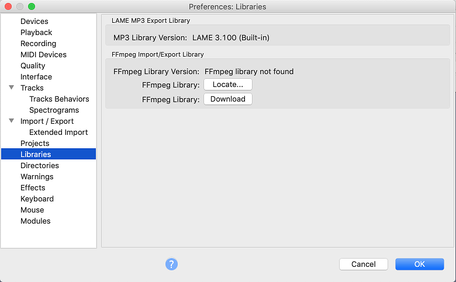

Installing FFmpeg for Mac
- Because of software patents, Audacity cannot include the FFmpeg software or distribute it from its own websites. Instead, use the following instructions to download and install the free and recommended FFmpeg third-party library.
- Advanced usage: If you already have 64-bit Audacity-compatible FFmpeg 2.2.x or 2.3.x shared libraries in the system PATH, Audacity will use those as long as you do not install FFmpeg from the links below and as long as you do not specify the FFmpeg you want Audacity to use in Libraries Preferences.
| Audacity 2.3.1 on Mac is now a 64-bit application. This means that if you are a user of previous Audacity versions on Mac and had installed the optional FFmpeg library then you must now install the 64-bit versions of the FFmpeg library, otherwise your imports and exports that depend upon FFmpeg will no longer work. Installing the 64-bit FFmpeg library will not overwrite or delete your 32-bit FFmpeg library if you have one installed. |
Contents
Recommended package installer
- Go to the external download page
Left-click this link, do not right-click. - In the 64-bit FFmpeg section, left-click the link "ffmpeg_64bit_osx.pkg" and save the file anywhere on your computer.
- When you have finished downloading, double-click the "ffmpeg_64bit_osx.pkg" in your Downloads folder.
- You will be guided through the installation
- Click through the steps in the installer. This will install the ffmpeg.55.64bit.dylib file in the system library at /Library/Application Support/audacity/libs/.
- On some Macs the process may look as though it has stalled on "Validating packages" - just be patient and wait for it to complete.
- Restart Audacity if it was running when you installed FFmpeg then Audacity should detect FFmpeg automatically.
- If you have problems with Audacity detecting FFmpeg, follow the steps below to manually locate FFmpeg.
Locating the FFmpeg library manually
If you installed FFmpeg while Audacity was running, or if you installed FFmpeg to a non-default location, Audacity will ask you to configure Preferences to locate the FFmpeg library.
To do this, access Preferences then the "Libraries" tab on the left:
- 
As in the image above, the "FFmpeg Library Version" will say "FFmpeg library not found". To correct this:
- Click the button to right of FFmpeg Library:
- If a "Success" message indicates Audacity has now automatically detected valid FFmpeg libraries and asks if you want to detect them manually, click , then to close Preferences
- If the "Locate FFmpeg" dialog appears, click
- Navigate to the folder that contains FFmpeg and select the file "ffmpeg.55.64bit.dylib"
- Click then
- Note that the FFmpeg library has been located
- Then click to close Preferences.
- FFmpeg Library Version should now show a set of three version numbers for the sub-libraries of FFmpeg ("F" for libavformat version, "C" for libavcodec version and "U" for libavutil version).
If you still see "not found", you may have installed the wrong libraries. Click the button to obtain the correct library for your operating system. You can also choose to see diagnostic information about FFmpeg detection.
Alternative zip download for expert users who want to choose their own library location
- Go to the external download page
Left-click this link, do not right-click - In the 64-bit FFmpeg section, left-click the link "FFmpeg64bit_MAC_OSX_for_Audacity_2.3.1_and_above.zip"
- Some Mac computers may extract the files from the zip automatically to a new folder in the Downloads directory called: FFmpeg64bit MAC OSX for Audacity
- Otherwise extract the contents of the downloaded ZIP file to obtain the folder to anywhere you have full permissions
- This folder will contain three files: ffmpeg_codecs.55.64bit.dyli, ffmpeg_utils.52.64bit.dylib and ffmpeg.55.64bit.dylib
- Copy all three files and paste them anywhere you have full permissions
- The preferred default Audacity location is /Library/Application Support/audacity/libs
- Then follow the instructions above to locate ffmpeg.55.64bit.dylib using the Libraries Preferences.
Compiling Audacity against another build of FFmpeg:
|